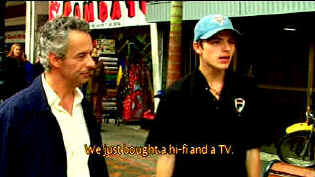

| Our Lady of the Assassins/ B+, B |
| Paramount/2001/100/ANA 1.85 |
Who says you can't go home again? Director Barbet
Schroeder returned to the scene of his childhood for an examination of the
extreme violence in the city of Medellín, Columbia. From the novel by
Fernando Vallejo and adapted for the screen by him, Our Lady of the
Assassins is a powerful and horrifying vision.
Just as Schroeder returned to the streets of
Medellín to make his film, often working under severe danger from locals,
the film traces the journey of writer Fernando Vallejo, who decides to
return home from the United States to his roots in Columbia after an
absence of more than thirty years. When he meets a young street boy in a
brothel, the city takes on a new reality, as Fernando sinks deeper into
the perversion of his city.
 |
|
A poet and a street kid. ©Columbia |
Our Lady of the Assassins, despite its
controversial themes, is a class production. The homosexual coupling
scenes are tastefully done. Violence is frighteningly casual. Kids in the
street just run around popping one and other off like it's nothing. Life
is cheap in the streets of Medellín, Columbia. There are so many murders
in this film and it's almost as if the writer is provoking the kid because
he knows what's going to happen every time he speaks out in confrontation.
Does Fernando become so accustomed to the violence that he too takes it as
a casual every day part of Medellín?
The language and the imagery of the language is
quite poetic. Glory is a statue that gets shat on by the birds, such is
the state of Medellín. When vultures circle of mass of decaying bodies,
Fernando observes that it's as he wants to wind up, like that corpse,
inside a lovely bird flying. The poetry soars In this twisted world the
street children give sacraments to beggars. The relationship between the
writer and the young boy almost reflects a meeting of the old world and
the new world.
Germán Jaramillo as Fernando, the
ex-patriot poet returning home to die and young Anderson Ballesteros as
Alexis are equally convincing. This is the first acting experience for
Ballesteros, whose own life is all too close to the character he plays.
Schroeder's work with the "new" actors is outstanding. They seem
very natural, like characters in a documentary.
Schroeder's choice to shoot Our Lady of the
Assassins on High Definition Video provides a uniquely transparent
window into the raw violent society of Medellín. Cinematically, the
vision comes close to a documentary feel or a totally new order.
The opening images are 100 percent transparent
with incredible depth. It's almost like a window into the film. It's shot
in High Definition Video. The colors are very good, but it doesn't look
like film; it almost looks too real. Contrast range is too even, likely
owing to the HD. The color renditions are good but it does take some
getting used to. I could put a live can of coke up against the image on
the screen and it would look close to the same. It's a clean image, not at
all edgy. Black levels in the night are mostly washed out. The Dolby
Digital 5:1 surround compliments the hyper reality very well. Yellow
English subtitles are clear and easy to read.

Selections from the Feature
Archive include articles on Akira Kurosawa, Blonde Bimbos, Frank Darabont, Steven Culp, John Herzfeld or Vietnam: The Hollywood Pariah, and many
more....
The Exquisite Muse of Zhang Yimou

The powerful image-making of Zhang Yimou has revealed itself in
virtually every film he has made. Coupled with his remarkable
collaboration with actress Gong Li, Zhang's has built a stunning body of
work Click the image to read all about it.

 Have you visited Home Theater Talk
lately? One of the friendliest places on the Net for Home Theater and DVD
discussion, you can get help for installation problems or simply share
your opinions with other Vidiots.
Have you visited Home Theater Talk
lately? One of the friendliest places on the Net for Home Theater and DVD
discussion, you can get help for installation problems or simply share
your opinions with other Vidiots.

DVD reviews for women
from a woman's point of view

A new entry in the 2001 home theater site sweepstakes. Chief focus on
hardware reviews with a smattering of software.

A home theater site filled with a host of useful information, including
links to many other site.

ISF Monitor
Calibrations in the Tristate New York area. Lots of hardware
info and frequent hardware peaks from video expert Kevin Miller. They may
be judgmental, but that's the point, isn't it. Lots of DVD reviews plus
news and more.